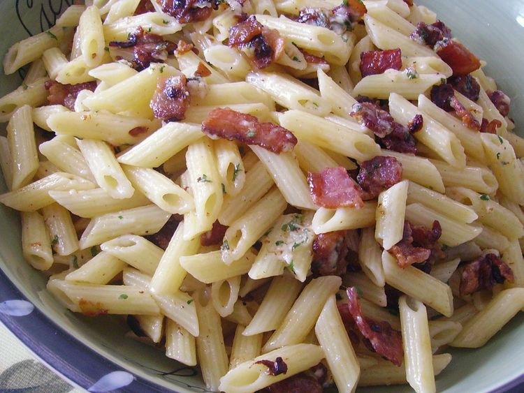

Bacon and Parmesane Penne Pasta

Description
If you love carbonara-style pasta but don't want to fool around with eggs, try this updated version of bacon and Parmesan penne, which packs a great bacon punch in a quick and easy weeknight supper.
Ingredients
- 1 (16 ounce) package dry penne pasta
- 1 pound bacon, coarsely chopped
- 1 large onion Chopped
- 1/4 cup olive oil
- 1/2 cup grated Parmesan cheese
Steps
- Bring a large pot of lightly salted water to a boil. Add penne and cook, stirring occasionally, until tender yet firm to the bite, about 11 minutes.
- While the pasta is cooking, cook bacon and onion in a large skillet over medium heat, stirring often, until bacon is crisp and onion is beginning to brown, about 10 minutes. Remove from the heat and drain grease into a small container.
- Drain pasta and transfer to a large serving bowl. Add oil and stir to coat pasta. Add cooked bacon and onion plus 1 to 2 tablespoons bacon grease. Sprinkle Parmesan over pasta and stir until well combined. Add more bacon grease as desired for flavor and moisture.